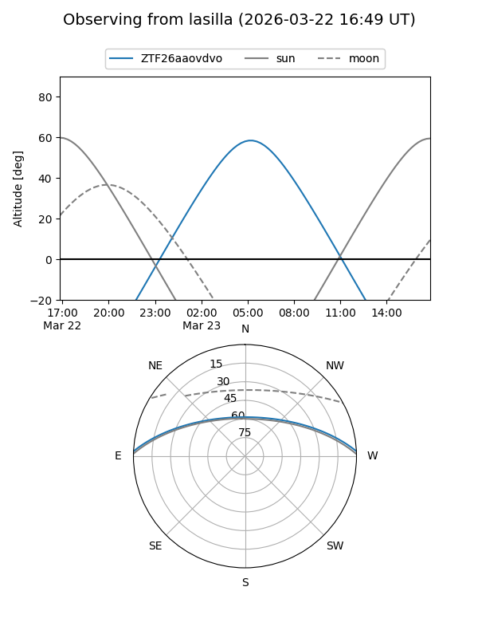
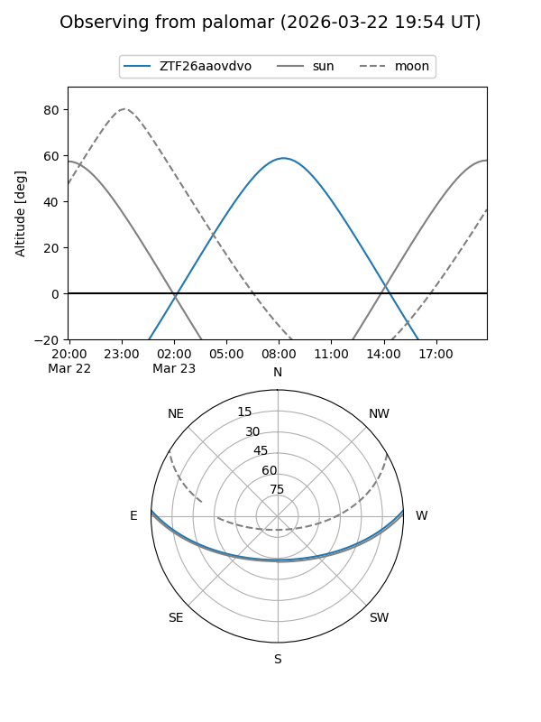
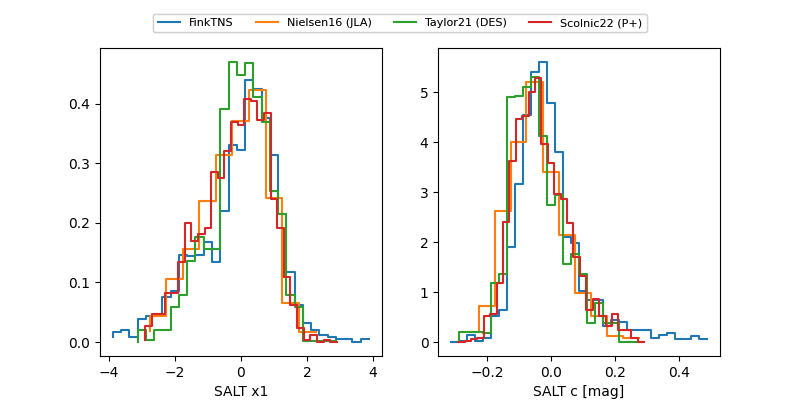

ZTF26aaovdvo
Target ZTF26aaovdvo at 2026-03-23 09:08
Aliases and brokers:
FINK: link
Lasair: link
ALeRCE: link
alt names
ZTF26aaovdvo (ztf,fink_ztf)
Coordinates:
equatorial (ra, dec) = 187.6514,+2.37112
equatorial (HMS+DMS) = 12:30:36.34,+02:22:16.03
galactic (l, b) = (290.6585,+64.74528)
Flags:
Photometry:
last ztfg=17.68
1 ztfg detections
Lightcurve
Visibility


Additional plots
